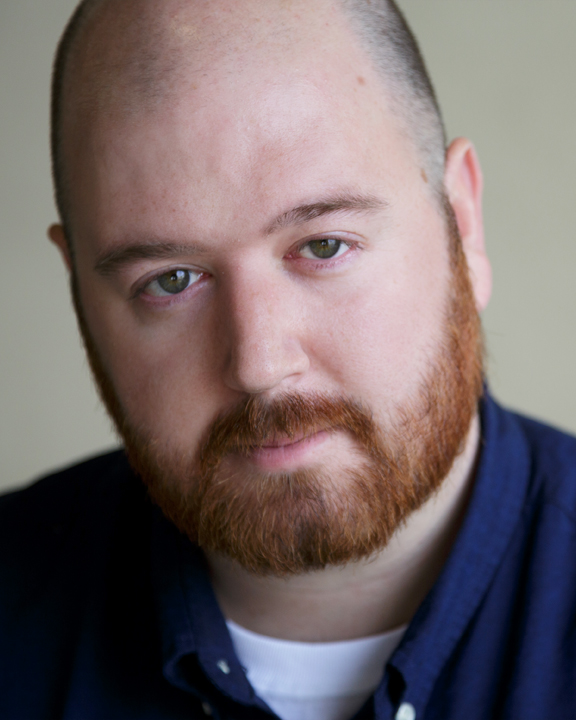
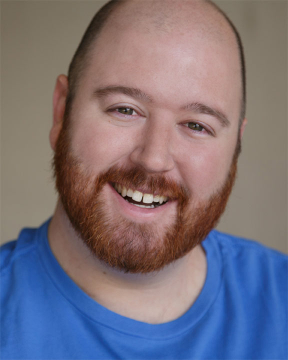

Will, The Actor
[BACK TO SPACE]:>


About Me
Will Saunders is a non union actor living in Los Angeles, CA. He's been in national commercials for 7-11 and Hungry Man, as well as performed on the sketch comedy show 'Six Degrees of Everything' on Tru TV. Will Saunders has completed the core curriculum of Upright Citizen's Brigade' improv classes and is currently in their Advanced Study program.
Acting Resume | LA Casting Link
Represented Commercially by Fire Starter Entertainment
Phone: 213-531-0547 | Email: info@fsetalent.com